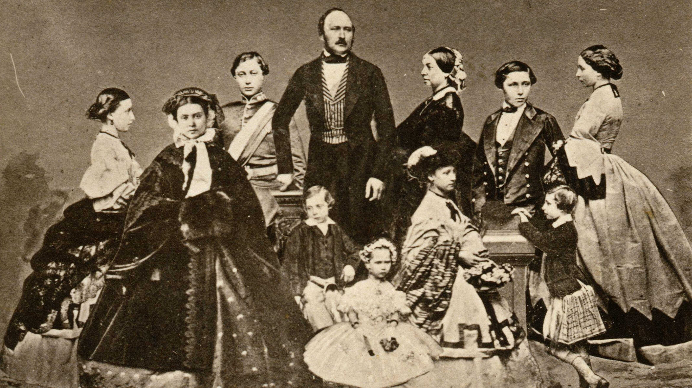

| Henry VIII | Queen Elizabeth I | Queen Victoria | Queen Elizabeth II |

Henry VIII was born on 28 June 1491, to King Henry VII and Elizabeth of York. As the second child (the eldest being Arthur), Henry was trained to become a priest of the Catholic Church. However, when his brother Aurthur died early, he was next in line and thus became the King of England. He reigned from April of 1509 to his death in 1547 and was coronated on the 29th of June in 1509. During his reign Henry had established the Church of England which embraced Catholicism and took some forms of Protestant reformations, and established the Royal Navy encouraging shipbuilding, the Royal Navy soon became the world's most powerful navy for hundreds of years.
|
| Henry VIII's wives |
| # | Name | Marriage date + length | Fate of Marriage | Reason for Fate |
|---|---|---|---|---|
| 1 | Catherine of Aragon | 11 June 1509 – 23 May 1533 (23 years, 11 months and 12 days) |
Annulled | Catherine was no longer able to bear children. |
| 2 | Anne Boleyn | 28 May 1533 – 17 May 1536 (2 years, 11 months and 19 days) |
Annulled 2 days prior to execution | Anne was tried for adultery, had other affairs with those in court. |
| 3 | Jane Seymour | 30 May 1536 – 24 October 1537 (1 year, 4 months and 24 days) |
Jane's death | Jane died of complications of her son Edward VI's birth. |
| 4 | Anne of Cleves | 6 January 1540 – 9 July 1540 (6 months and 3 days) |
Annulled | King Henry thought Anne of Cleves was too ugly for him. |
| 5 | Catherine Howard | 28 July 1540 – 13 February 1542 (1 year, 6 months and 16 days) |
Catherine's beheading | Catherine was convicted of adultery. |
| 6 | Catherine Parr | 12 July 1543 – 28 January 1547 (3 years, 6 months and 16 days) |
Henry VIII's Death | Henry's poor health resulted in his death. |
King Henry VIII was one of a kind, no other king had acted the way that he had with his wives. Most people have heard about Henry and his wives, and how he had been ruthless to all of them. Although King Henry had 6 wives, most of the conflict happens between his first and second wives, Catherine of Aragon and Anne Boleyn.
| Catherine of Aragon |
Catherine of Aragon was Henry VIII's first wife, unlike the traditional marriages that took place within the royal families. Instead of marrying for an alliance, Henry genuinely married out of love as he became quite fond of Catherine. The marriage between Henry and Catherine was doing quite well and "unusually fond"(as told by historians). They were such a “power-couple” they ruled over England together and both held a mutual respect. During the Battle of Flodden, Catherine helped Henry led troops to invade Scotland while pregnant. But fast-forward 20 years later, Catherine of Aragon was only able to successfully produce one child, and it was a girl. Henry was not pleased, to continue his lineage, Henry must have a boy to take over the throne. As a result, he began looking for other mistresses. This led to one of the messiest break-ups of all time.
 |
| Anne Boleyn |
Henry had plenty of mistresses behind Catherine's back, but caught his eye, she was Anne Boleyn. The problem was, Anne didn't want to be just a "mistress" she wanted to be the queen, and Henry who was head over heels for her, did several things. And "things", Henry did the following:
However, this might seem silly and foolish, this had made a massive change in direction for history. If it weren't for Henry's "foolish" actions, the Church of England wouldn't have existed. It was a long and tedious process for Henry VIII to divorce Catherine of Aragon, but when the annualization was completed, Anne Boleyn became his wife and was crowned Queen of England, completely replacing Catherine.
Elizabeth I was the only child between Anne Boleyn and King Henry VIII, born on September 17, 1533, in the Palace of Placentia, Elizabeth would become a joy to her parents. She was in the spotlight for quite some time until her half-brother, Edward, was born, putting her one place back in the line of succession. Elizabeth had quite an educated child, fluent in 6 languages, and learned theology, history, rhetoric, logic, philosophy, math, logic, literature and geometry. After the death of her sister, Mary I, she was coronated Queen of England on 15 January 1559 though her reign started in 1558 and ended in 1603 when she died.
| Young Queen Elizabeth |
When Elizabeth was a child, she faced many adversities. When Elizabeth was nearly 3 years old, her mother Anne Boleyn was beheaded on charges of adultery and having affairs with others in the court, this also made her father, King Henry VIII denounce her as an illegitimate heir joining her half-sister Mary who had been declared illegitimate just a couple of years earlier. It was also suspected that she had suffered sexual abuse from her stepmother (Catherine Howard)’s new husband, Thomas Seymour, who was also the uncle of her half-brother King Edward VI. She faced heavy criticism for being a protestant during the reign of her half-sister, Queen Mary I who was a devote catholic with a large catholic support.
| Queen Elizabeth I |
Queen Elizabeth was an ardent supporter of literature and really expanded the access of literature England had. Some notable literary figures from her reign are Shakespeare, and Marlowe. There was a kind of literary “reformation” within England, Shakespeare and Marlowe’s plays had become widely popular as many in England would gather at The Globe Theatre to view the spectacular plays that were being performed. Queen Elizabeth herself was also very fond of Shakespeare’s plays, and they were known to be seen together often.
Queen Elizabeth was also known for keeping her “virgin” status being nicknamed, “The Virgin Queen”. Queen Elizabeth never married nor had any children, so people viewed her as a Goddess and never as a normal woman, she was often depicted as a woman who was married to her country, England, and cared for it so much she wouldn’t marry or have children.

Born on 24 May 1819 in Kensington Palace, Queen Victoria was the only child of Prince Edward, Duke of Kent and Strathearn, and Princess Victoria of Saxe-Coburg-Saalfeld. Victoria was also the only surviving legitimate child of her grandfather, King William IV, so when he died, she was given the responsibility of being Queen. On 28 June 1838, Victoria was crowned Queen of England her reign started in 1838 until her death in 1901, becoming the longest lasting reign until our current monarch (Queen Elizabeth II) broke that record.
 |
| Victoria as a child |
From an outsider's perspective, little Victoria had the perfect life, living in a beautiful palace with an abundance of toys, lavish dresses, and extravagant vacations abroad. But behind those castle walls, Victoria lived a life where she was suppressed by a man who took advantage of his power and controlled Victoria in an eerily strict manner. The man was John Conroy, the man who was supposed to be the trusted accountant of Victoria became the man who tried to force her into a weak, dull-witted persona that made her “unfit” for Queen. Essentially his goal was to weaken Princess Victoria, make her seem foolish, control her like a marionette, and then extract mass political power out of those malicious actions. But obviously, Victoria was a strong-willed spirit, even when she fell ill with typhoid fever at 16. When Victoria was stricken with typhoid fever, Conroy saw this as an opportunity to tie the final string on making Victoria his puppet for power. Barging into her hotel room, Conroy demanded that Victoria sign away her power and make him secretary, this would make Conroy the King since he had power over all her responsibilities and affairs. But her strong-willed mind had the strength to say “No”. Two years later, at the age of 18, Victoria became Queen following the death of her grandfather.
 |
| Queen Victoria |
Queen Victoria had one of the longest lasting reigns until it was broken by our current Monarch, Queen Elizabeth. She hadn’t seen any wars or made major political decisions so why is she so adored? Well, Queen Victoria may not have made a massive political change of England, but she was the reigning monarch during the initiation of several milestones. Most notably, the industrial revolution of the world. Victoria, in fact, was the first monarch that ever rode a train. Additionally, she started the Victorian Era in literature. In the Victorian Era, literature resembled the Queens personality, serious on the outside, playful on the inside. The theme of Victorian novels was also influenced by Victorias lengthy period in mourning after the death of Prince Albert and her mother, making dark, eerie scenes and themes popular amongst those in the Victorian era. Some of the most notable works in the Victorian Era are Jane Eyre, Dracula, Pride and Prejudice, Oliver Twist, and Wuthering Heights. As you may notice, there has been an increase of female authors in the Victorian Era such as Emily, Charlotte, Anne Brontë, and Harriet Beecher Stowe.
|  |
| Queen Victoria and Prince Albert with their chidlren |
| Name of Child | Year of Birth + Year of Death | Whom they were married off to |
|---|---|---|
| Princess Victoria | 1840-1901 | German Emperor Frederick III |
| Albert Edward (Prince of Wales) | 1841-1910 | Alexandra of Denmark |
| Princess Alice | 1943-1878 | Louis IV (Grand Duke of Hesse) |
| Prince Albert (Duke of Edinburgh) | 1844-1900 | Maria Alexandrovna (Grand Duchess of Russia) |
| Princess Helena | 1846-1923 | Prince Christian of Schleswig-Holstein |
| Princess Louise | 1848-1939 | John Campbell (9th Duke of Argyll) |
| Prince Arthur | 1850-1942 | Princess Louise Margaret of Prussia |
| Prince Leopold | 1853-1884 | No Marriage |
| Princess Beatrice | 1857-1977 | Prince Henry of Battenberg |

Queen Elizabeth is the first child of King George VI and Queen Elizabeth who were once the Duke and Duchess of York. Elizabeth was born on April 21, 1926, in Mayfair, her younger sister (who she loves dearly), Margaret, was born shortly after on the 21st of August 1930. Since her uncle had abdicated the throne, Elizabeth was made the next in line for succession, then her sister Margaret.
| Elizabeth during WWII |
During WWII, Elizabeth was continually active in taking part in military affairs. When she was at the early age of 14, she made her first radio broadcast during the BBC’s Children Hour saying, “We are trying to do all we can to help our gallant sailors, soldiers, and airmen, and we are trying, too, to bear our own share of the danger and sadness of war. We know, every one of us, that in the end all will be well.” She was later trained to be a driver and mechanic, and even became an honorary junior commander which was the female equivalent of a captain.
 |
| Queen Elizabeth II |
As the longest reigning monarch, Queen Elizabeth has done a lot for the British Commonwealth. Queen Elizabeth has taken part in many charities as well as a lot of tours around the British Commonwealth. She has seen the last 14 U.S presidents, 14 Prime Ministers of the United Kingdom, 12 Canadian Prime Ministers, and 15 Australian Prime Ministers.
In the table below, there is a list of links that you can use to learn more about these fascinating monarchs!
| Monarch | Link for more information |
|---|---|
| Henry VIII | https://www.royal.uk/henry-viii |
| Elizabeth I | https://www.royal.uk/elizabeth-i |
| Victoria | https://www.royal.uk/queen-victoria |
| Elizabeth II | https://www.royal.uk/her-majesty-the-queen |
Page with more information on the images used
Return to the top of the page